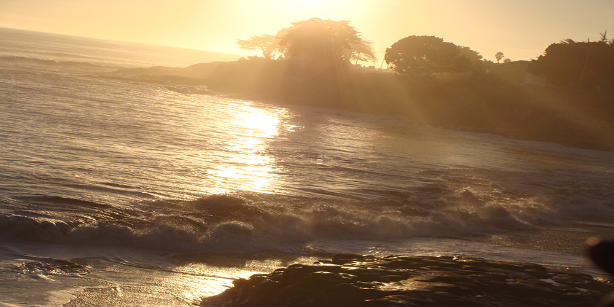

Santa Cruz
Santa Cruz is the classic beach destination to many north Californians. Santa Cruz pairs a carefree oceanside scene with a bustling downtown brimming with tasteful restaurants and shops. Santa Cruz also homes a butterfly park and also an amusement park near the boardwalk.
The butterfly park has thousands of monarch butterflies visting during the months of November and February. It is one the most beautiful views to see so many butterflies at one place.
The boardwalk amusement park is another 'hot spot' for the visitors. There are tens of rides and snack shops. So there is a little something for everyone! On the beach there will be usuallu surfers surfing the waves away. The sunset is best time to be at Santa Cruz. The orange rays of the setting Sun falling on the waves makes you never want to leave the place. Such is the beauty of the place. Make sure to take some time to visit Santa Cruz.